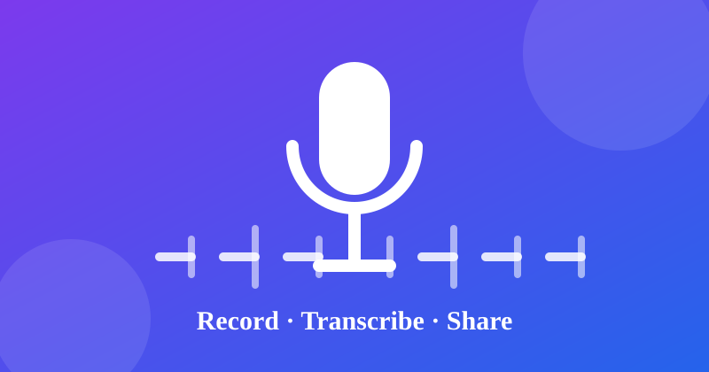

5 Best Free Voice Recorder Apps for Android (2026)

Every Android phone ships with a voice recorder, but the built-in one is not always the best one — some are buried in a folder, some have no transcription, and some save in formats nothing else can open. We tested the most popular free recorder apps on a mid-range Android phone for one question: which one records clear audio, saves in a format you can actually use, and does it without ads, watermarks or a subscription ambush?
What we tested
- Sound quality — clear voice at arm's length, in a quiet room and in a noisy one
- Free-tier limits — recording time limits, ads, transcription and export restrictions
- Useful extras — transcription, trimming, silence skipping and cloud backup
- Everyday use — one-tap recording, finding old recordings, and sharing them
1. Easy Voice Recorder — best overall recorder
Easy Voice Recorder is the safest pick on any Android phone: one big record button, no time limits on recordings, and it saves in standard formats (PCM, MP4 or AMR) that open anywhere. The free version has ads and adds a beta on-device transcription feature for English, Spanish and Portuguese — with a time limit per recording unless you upgrade. It is not a call recorder, and it says so plainly. If you record lectures, meetings or voice notes on a non-Pixel, non-Samsung phone, start here.
2. Google Recorder — best transcription, Pixel only
Google Recorder is the cleverest recorder on this list: it transcribes speech to text live and entirely on the device, lets you search your recordings by word, and costs nothing with no ads. The catch is the big one — it is officially only for Pixel phones, so most Android users cannot install it at all. If you own a Pixel, use this and skip the rest; everyone else should move on to the next pick.
3. Samsung Voice Recorder — best on Samsung phones
Samsung phones already have this one pre-installed, and it is genuinely good: clear recording, speech-to-text, an interview mode that separates two speakers, and a skip-silence option that cuts the dead air out of long lectures. It is free, ad-free and needs nothing to install — but it is only available on Samsung devices. If you own a Galaxy, check your app drawer before downloading anything else.
4. Dolby On — best sound quality for music and voice
Dolby On is the pick for musicians, podcasters and anyone recording more than talking: it automatically cleans up background noise, balances levels and adds a warm Dolby polish, all free and with no ads. It records audio and video, and the automatic processing genuinely makes phone-mic audio sound better. It has no transcription and no meeting tools, so it is a specialist — but for sound quality alone, nothing else free on this list touches it.
5. Fossify Voice Recorder — best open-source, ad-free recorder
Fossify Voice Recorder is the privacy-first choice: fully open-source, completely ad-free, works entirely offline and asks for no internet permission at all. It is deliberately simple — record, name, save, share — with no transcription, no cloud sync and no account. It is still labelled beta on the Play Store, so expect a plain interface and the occasional rough edge, but for quick private recordings it is the most honest recorder here.
A warning about call recording apps
Modern Android blocks most apps from recording phone calls, and no free recorder can reliably work around that — apps that promise "secret call recording" usually deliver broken audio, or worse, ask for permissions they do not need. If recording calls is what you actually need, check your phone's built-in dialler first (some brands still offer it), and check your local laws before recording anyone: in many places all parties must consent.
Quick comparison
| Recorder | Ads | Transcription in free tier | Best for |
|---|---|---|---|
| Easy Voice Recorder | Yes | Yes (beta, limited) | Any phone, everyday recording |
| Google Recorder | None | Yes, on-device | Pixel owners, searchable notes |
| Samsung Voice Recorder | None | Yes | Samsung owners, lectures |
| Dolby On | None | No | Music, podcasts, best sound |
| Fossify Voice Recorder | None | No | Private, offline, ad-free |
Note: prices and free-tier features change often — always check the Play Store listing before installing. We never link to cracked or modded apps.